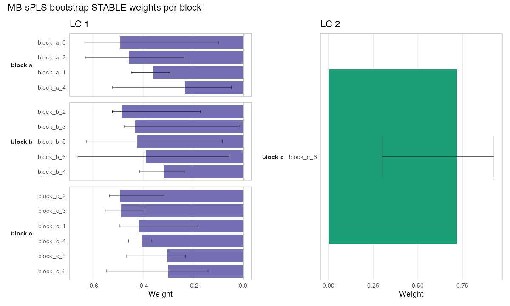
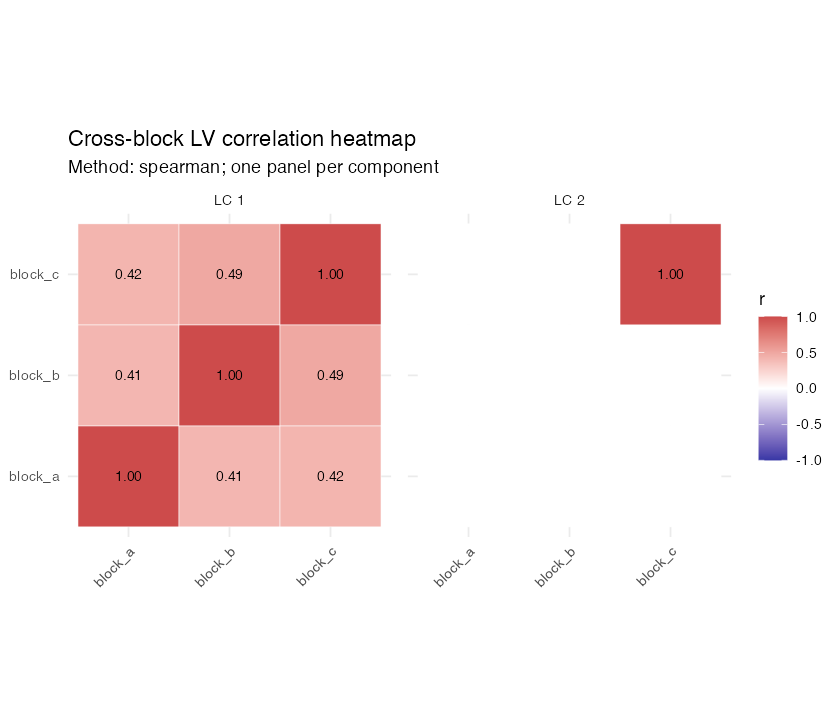

mlr3mbspls integrates multi-block sparse partial least squares (MB-sPLS) with the mlr3 ecosystem: pipelines, tuning, resampling, custom measures, rich visualisations, bootstrap stability selection, prediction‑side validation and nested CV utilities. A high‑performance C++/Armadillo backend powers the core algorithms (training + test EV, permutation, bootstrap, sparsity by block/component, deflation).
Highlights
Multi-Block Representation Learning
- Sequential orthogonal MB‑sPLS with per‑block L¹ sparsity (vector or full
c_matrix) - Two optimisation targets: mean absolute correlation (MAC) or Frobenius norm
- Training‑time permutation early stopping (per component)
- Prediction‑side validation: permutation or bootstrap inference on latent correlation
- Block‑wise explained variance (EV) + per‑component EV on train & test
Pipeline Components (PipeOps)
-
PipeOpMBsPLS– main transformer (produces per‑block latent scoresLVk_block) -
PipeOpMBsPLSBootstrapSelect– post‑hoc bootstrap feature & component selection (CI or frequency method) with component re‑numbering -
PipeOpMBsPCA– multi‑block sparse PCA analogue -
PipeOpMBsPLSXY– supervised XY variant -
PipeOpBlockScaling– unit sum‑of‑squares or feature‑wise scaling / z‑scoring (optionally divide by √p) -
PipeOpSiteCorrection– multi‑block site/batch correction (methods defined per site variable) -
PipeOpFeatureSuffix– systematic feature renaming -
PipeOpTargetLabelFilter– target label filtering convenience op
Learners & Imputation Helpers
-
LearnerClassifKNNGower,LearnerRegrKNNGower– kNN using Gower distance for mixed types -
impute_knn_graph()– two‑step numeric/factor kNN imputation graph using above learners
Tuning & Orchestration
-
TunerSeqMBsPLS,TunerSeqMBsPCA– sequential component‑wise tuning (progressively add components) - Sparse hyper‑parameters exposed with consistent
c_<block>naming or fullc_matrix
Evaluation & Stability Tooling
- Measures:
MeasureMBsPLS_MAC,MeasureMBsPLS_EV,MeasureMBsPLS_BlockEV,MeasureMBsPLS_EVWeightedMAC,MeasureMBSPCAMEV -
compute_test_ev(),compute_pipeop_test_ev()– EV + objective on new data -
mbspls_flip_weights()– deterministic reorientation (sign alignment) -
mbspls_extract_bootstrap_means()– summarise bootstrap runs -
mbspls_plot_block_weight_ci()– block weight CIs - Aggregation helpers:
aggregate_mbspls_payloads(),collect_mbspls_nested_cv()
Higher Level Graph Utilities
-
mbspls_preproc_graph()– canonical preprocessing (type conversion → encoding → kNN impute → site correction → scaling) -
mbspls_graph_learner()– end‑to‑end GraphLearner constructor (preproc → MB‑sPLS → optional bootstrap selection → downstream learner) -
mbsplsxy_graph()/mbsplsxy_graph_learner()– supervised MB‑sPLS‑XY graph constructors for classification and regression
Resampling & Batch Infrastructure
-
mbspls_nested_cv()– nested CV (inner tuning budget + outer evaluation) -
mbspls_nested_cv_batchtools()– batchtools backend variant
Installation
# Development version
devtools::install_github("coorsaa/mlr3mbspls")
# Core dependencies (install if missing)
install.packages(c("mlr3","mlr3pipelines","mlr3cluster","data.table","ggplot2"))Optional: network plots require igraph + ggraph.
TaskMultiBlock with breast.TCGA and potato
Use the dataset adapters to obtain ready-to-use multi-block tasks.
# breast.TCGA adapter
if (requireNamespace("mixOmics", quietly = TRUE)) {
task_tcga = task_multiblock_breast_tcga(task_type = "classif")
task_tcga$block_names
}
# potato adapter
if (requireNamespace("multiblock", quietly = TRUE)) {
task_potato = task_multiblock_potato(task_type = "regr", response = 1L)
task_potato$block_names
}Supervised Quick Start (MB-sPLS-XY)
Packaged classification and regression toy tasks are also available and work with the supervised graph constructors.
# classification
task_cls = tsk("mbspls_synthetic_classif")
gl_cls = mbsplsxy_graph_learner(
task = task_cls,
learner = lrn("classif.featureless"),
ncomp = 2L
)
# regression
task_regr = tsk("mbspls_synthetic_regr")
gl_regr = mbsplsxy_graph_learner(
task = task_regr,
learner = lrn("regr.featureless"),
ncomp = 2L
)Quick Start (Unsupervised Multi-Block Sparse Partial Least Squares)
The example below uses the packaged task mbspls_synthetic_blocks and follows a script-like, inspectable sequence.
Step 0: Setup
Load packages and define compact runtime settings. These defaults are intentionally small for a quick demonstration. Increase them for full analyses.
library(mlr3)
library(mlr3pipelines)
library(mlr3tuning)
library(mlr3cluster)
library(mlr3learners)
library(mlr3mbspls)
library(data.table)
set.seed(42)
cfg = list(
ncomp = 3L,
centers = 2L,
inner_folds = 3L,
outer_folds = 3L,
tuner_budget = 40L,
n_perm = 40L,
n_perm_tuning = 40L,
val_test_n = 40L,
bootstrap_B = 40L,
frequency_threshold = 0.5,
perf_metric = "mac"
)Step 1: Load Packaged Task
Load the packaged synthetic multi-block task, inspect its backend, and reuse the task-level block metadata directly.
task_source = tsk("mbspls_synthetic_blocks")
dt_demo = as.data.table(task_source$data(cols = task_source$feature_names))
blocks = task_source$block_features()Step 2: Define Site Correction
The block mapping already lives on the task. Site correction is declared per block so adjustments stay explicit.
Step 3: Clone the Analysis Task
The packaged task is already a TaskMultiBlock, so for analysis you can usually just clone it.
task_train = TaskMultiBlock(
task_source,
id = "mbspls_synthetic_blocks_analysis"
)Step 4: Build Nested-CV Learner
For nested CV and tuning, bootstrap selection is disabled intentionally. This keeps evaluation focused on core model generalization.
gl_nested = ppl(
"mbspls_graph_learner",
learner = lrn("clust.kmeans", centers = cfg$centers),
task = task_train,
site_correction = site_correction,
site_correction_methods = site_correction_methods,
ncomp = cfg$ncomp,
performance_metric = cfg$perf_metric,
permutation_test = TRUE,
n_perm = cfg$n_perm,
bootstrap = FALSE,
bootstrap_selection = FALSE,
B = 1L,
val_test = "permutation",
val_test_n = cfg$val_test_n
)
rs_outer = rsmp("cv", folds = cfg$outer_folds)
rs_inner = rsmp("cv", folds = cfg$inner_folds)
rs_outer$instantiate(task_train)Step 5: Run Nested CV
This is the primary inferential validation stage.
res_nested = mbspls_nested_cv(
task = task_train,
graphlearner = gl_nested,
rs_outer = rs_outer,
rs_inner = rs_inner,
ncomp = cfg$ncomp,
tuner_budget = cfg$tuner_budget,
tuning_early_stop = TRUE,
performance_metric = cfg$perf_metric,
val_test = "permutation",
val_test_n = cfg$val_test_n,
n_perm_tuning = cfg$n_perm_tuning,
store_payload = TRUE
)
res_nested$summary_tableStep 6: Retune on Full Training Data
Retune c_matrix on all rows after nested validation. This final matrix is reused across final mode fits.
gl_tune = ppl(
"mbspls_graph_learner",
learner = lrn("clust.kmeans", centers = cfg$centers),
task = task_train,
site_correction = site_correction,
site_correction_methods = site_correction_methods,
ncomp = cfg$ncomp,
performance_metric = cfg$perf_metric,
permutation_test = TRUE,
n_perm = cfg$n_perm,
bootstrap = FALSE,
bootstrap_selection = FALSE,
B = 1L,
val_test = "none"
)
tuner = TunerSeqMBsPLS$new(
tuner = "random_search",
budget = cfg$tuner_budget,
resampling = rsmp("cv", folds = cfg$inner_folds),
parallel = "none",
early_stopping = TRUE,
n_perm = cfg$n_perm_tuning,
performance_metric = cfg$perf_metric
)
instance = ti(
task = task_train,
learner = gl_tune,
resampling = rsmp("insample"),
measure = msr("mbspls.mac_evwt"),
terminator = trm("evals", n_evals = 1)
)
tuner$optimize(instance)
c_matrix_final = instance$result$learner_param_vals[[1]]$c_matrix
c_matrix_finalStep 7: Final Fits by Mode
Train three final modes:
-
raw: no stability filter -
stable_ci: CI-filtered stability -
stable_frequency: frequency-filtered stability
Bootstrap selection is enabled only at this stage.
out_dir = file.path("analysis_results", paste0(format(Sys.time(), "%Y%m%d_%H%M%S"), "_MBSPLS_SYNTHETIC_BLOCKS"))
dir.create(out_dir, recursive = TRUE, showWarnings = FALSE)
modes = list(
raw = list(selection = "none", predict_weights = "raw"),
stable_ci = list(selection = "ci", predict_weights = "stable_ci"),
stable_frequency = list(selection = "frequency", predict_weights = "stable_frequency")
)
for (mode_name in names(modes)) {
mode_spec = modes[[mode_name]]
gl_final = ppl(
"mbspls_graph_learner",
learner = lrn("clust.kmeans", centers = cfg$centers),
blocks = blocks,
site_correction = site_correction,
site_correction_methods = site_correction_methods,
ncomp = cfg$ncomp,
performance_metric = cfg$perf_metric,
permutation_test = TRUE,
n_perm = cfg$n_perm,
bootstrap = TRUE,
bootstrap_selection = mode_spec$selection != "none",
selection_method = if (mode_spec$selection == "frequency") "frequency" else "ci",
frequency_threshold = cfg$frequency_threshold,
B = cfg$bootstrap_B,
val_test = "none"
)
gl_final$param_set$values$mbspls.c_matrix = c_matrix_final
if (!is.null(gl_final$graph$pipeops$mbspls)) {
gl_final$graph$pipeops$mbspls$param_set$values$c_matrix = c_matrix_final
gl_final$graph$pipeops$mbspls$param_set$values$predict_weights = mode_spec$predict_weights
gl_final$graph$pipeops$mbspls$param_set$values$store_train_blocks = TRUE
}
gl_final$train(task_train)
pred_train = gl_final$predict(task_train)
po_state = gl_final$model$mbspls
mode_dir = file.path(out_dir, mode_name)
dir.create(mode_dir, recursive = TRUE, showWarnings = FALSE)
fwrite(data.table(row_id = pred_train$row_ids, cluster = as.character(pred_train$partition)),
file.path(mode_dir, "clusters_train.csv"))
saveRDS(gl_final, file.path(mode_dir, "graphlearner.rds"))
saveRDS(po_state, file.path(mode_dir, "train_state.rds"))
}Step 8: Save Core Outputs
Persist nested CV summaries and payloads for reporting and reproducibility.
fwrite(as.data.table(res_nested$summary_table), file.path(out_dir, "nested_cv_summary.csv"))
saveRDS(res_nested, file.path(out_dir, "nested_cv_object.rds"))Prediction-Side Validation & Bootstrap Selection
# Optional: parallel bootstrap selection (cross-platform) via future
# install.packages(c("future", "future.apply"))
if (requireNamespace("future", quietly = TRUE)) {
future::plan(future::multisession, workers = 4)
# future::plan(future::sequential) # reset when done
}
log_env = new.env(parent = emptyenv())
graph_sel = po("blockscale", param_vals = list(blocks = blocks)) %>>%
po("mbspls", blocks = blocks, ncomp = 4L, performance_metric = "mac",
permutation_test = TRUE, n_perm = 200L, perm_alpha = 0.05,
val_test = "permutation", val_test_n = 500L, val_test_alpha = 0.05,
append = TRUE, # expose upstream LV columns to selection op
store_train_blocks = TRUE, # pass original blocks for bootstrap
log_env = log_env) %>>%
po("mbspls_bootstrap_select", log_env = log_env, bootstrap = TRUE,
B = 200L, selection_method = "ci", align = "block_sign",
workers = 4L) %>>%
po("learner", learner = lrn("clust.kmeans", centers = 3))
gl_sel = as_learner(graph_sel)
gl_sel$train(task)
# Stable (post-selection) latent columns now in the task representation
gl_sel$model$mbspls_bootstrap_select$kept_blocks_per_compHigher Level Convenience Graph
# --- Site / batch effect correction example ---
# PipeOpSiteCorrection supports per-block methods: "partial_corr", "combat", "dir".
# For "combat" supply a list with elements site=<char1>, covariates=<char_vec>.
# For "partial_corr" supply a character vector of (site + optional covariates) columns.
# Add mock site / batch / covariate columns to the data (if not already present)
dt[, site := sample(c("S1","S2","S3"), .N, TRUE)]
dt[, batch := sample(c("B1","B2"), .N, TRUE)]
dt[, age := rnorm(.N, 50, 8)]
dt[, sex := sample(c("F","M"), .N, TRUE)]
# Update task backend to include new columns
task = TaskClust$new("mb", backend = dt)
task$select(setdiff(task$feature_names, "id"))
# Per-block site correction specifications
site_correction = list(
clinical = list(site = "site", covariates = c("age","sex")), # ComBat with covariates
genomics = c("batch"), # partial correlation on batch
metabol = "site" # single categorical site (partial_corr)
)
# Corresponding methods per block
site_correction_methods = list(
clinical = "combat",
genomics = "partial_corr",
metabol = "partial_corr"
)
# Optional: use future for parallel bootstrap stability selection
# future::plan(future::multisession, workers = 4)
gl_full = mbspls_graph_learner(
blocks = blocks,
site_correction = site_correction,
site_correction_methods = site_correction_methods,
keep_site_col = FALSE, # drop site / covariate columns after correction
ncomp = 3L,
performance_metric = "mac",
permutation_test = TRUE,
n_perm = 200L,
bootstrap = TRUE,
B = 100L,
workers = 4L,
selection_method = "frequency",
frequency_threshold = 0.1
)
gl_full$train(task)Visualisation Examples
Example Plots
The README includes two representative MB-sPLS plots generated from the packaged synthetic task.
Block weights (bootstrap-stable)

Latent correlation heatmap (Spearman)

Reproduce these plots with:
task_plot = tsk("mbspls_synthetic_blocks")
site_correction = list(block_a = "site_batch", block_b = "site_batch", block_c = "site_batch")
site_methods = list(block_a = "partial_corr", block_b = "partial_corr", block_c = "partial_corr")
gl_plot = mbspls_graph_learner(
task = task_plot,
learner = lrn("clust.kmeans", centers = 2L),
site_correction = site_correction,
site_correction_methods = site_methods,
ncomp = 2L,
c_matrix = matrix(3, nrow = 3L, ncol = 2L),
performance_metric = "mac",
permutation_test = FALSE,
bootstrap = TRUE,
bootstrap_selection = TRUE,
selection_method = "ci",
B = 20L,
val_test = "none"
)
gl_plot$train(task_plot)
autoplot(gl_plot, type = "mbspls_weights", source = "bootstrap", top_n = 12)
autoplot(gl_plot, type = "mbspls_heatmap", method = "spearman", absolute = FALSE)
library(mlr3viz)
autoplot(gl_sel, type = "mbspls_weights", source = "weights", top_n = 10)
autoplot(gl_sel, type = "mbspls_weights", source = "bootstrap", alpha_by_stability = TRUE)
autoplot(gl_sel, type = "mbspls_variance", show_total = TRUE)
autoplot(gl_sel, type = "mbspls_heatmap", method = "spearman", absolute = FALSE)
# Optional network (needs igraph/ggraph installed)
# autoplot(gl_sel, type = "mbspls_network", cutoff = 0.1)mbspls_plot_block_weight_ci() produces per‑block weight confidence intervals after bootstrap selection:
mbspls_plot_block_weight_ci(gl_sel, source = "bootstrap", alpha_by_stability = TRUE)| Measure Class | Purpose |
|---|---|
MeasureMBsPLS_MAC |
Mean absolute correlation of block scores |
MeasureMBsPLS_EV |
Mean prediction-side explained variance across components |
MeasureMBsPLS_BlockEV |
Mean prediction-side block EV across components and blocks |
MeasureMBsPLS_EVWeightedMAC |
MAC weighted by EV contribution |
MeasureMBSPCAMEV |
EV (multi‑block sparse PCA) |
Use like any mlr3 measure:
Nested Cross-Validation
library(mlr3tuning)
res_nested = mbspls_nested_cv(
task = task,
graphlearner = gl_full,
rs_outer = rsmp("cv", folds = 3),
rs_inner = rsmp("cv", folds = 2),
ncomp = 4L,
tuner_budget = 10L,
performance_metric = "mac"
)
str(res_nested)Batchtools version (for HPC) is available via mbspls_nested_cv_batchtools().
Sequential Component Tuning
tuner = TunerSeqMBsPLS$new()
instance = ti(
task = task,
learner = gl_full,
resampling = rsmp("cv", folds = 2),
measure = msr("mbspls.mac"),
terminator = trm("evals", n_evals = 20)
)
# tuner$optimize(instance)
# instance$result$learner_param_vals[[1]]$c_matrixUseful Low-Level Helpers
| Function | Role |
|---|---|
compute_test_ev() |
Compute EV + objective on new matrices (standalone) |
compute_pipeop_test_ev() |
Same for a PipeOp state representation |
mbspls_eval_new_data() |
Score new data given training state (matrix interface) |
mbspls_flip_weights() |
Sign alignment (GraphLearner, PipeOp, list) |
mbspls_extract_bootstrap_means() |
Summarise bootstrap weight means |
aggregate_mbspls_payloads() |
Merge logged payloads (e.g. across resamples) |
collect_mbspls_nested_cv() |
Collect nested CV payload archives |
Custom Learners (Gower kNN)
These are used implicitly inside impute_knn_graph() and can be part of supervised pipelines downstream of MB‑sPLS/MB‑sPCA representations.
Reproducible Sparsity Specification
Two options:
- Per‑block constraints automatically created: parameters named
c_<block>with default upper bound √p. - Provide a
c_matrix(rows = blocks, cols = components) – overridesncompand per‑blockc_values.
Vignette
See the Quickstart vignette for an end‑to‑end multi‑omics example:
vignette("quickstart", package = "mlr3mbspls")Citation
If you use mlr3mbspls in academic work please cite:
@Manual{mlr3mbspls,
title = {mlr3mbspls: Multi-Block Sparse PLS for mlr3},
author = {Stefan Coors and Clara Sophie Vetter},
year = {2025},
note = {R package version 0.3.0},
url = {https://github.com/coorsaa/mlr3mbspls}
}